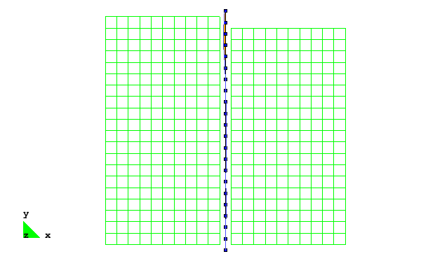
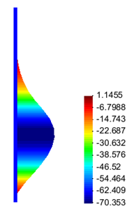
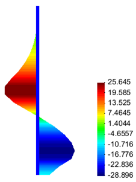
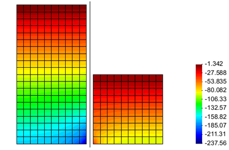
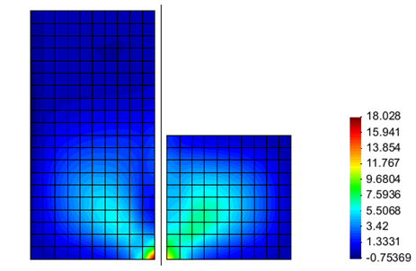
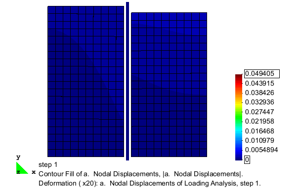
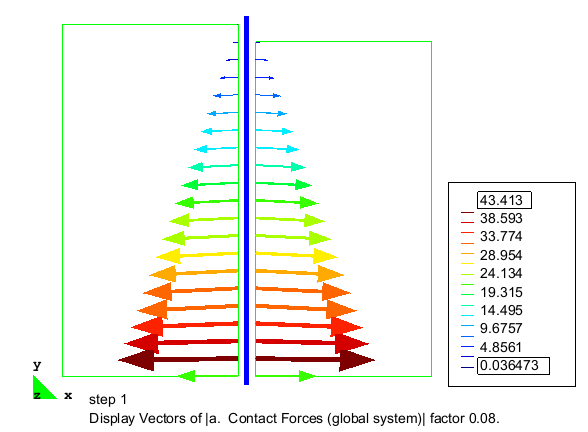

This article describes the simulation of an excavation supported by a cantilevered sheet pile wall using OpenSees. The model considers plane strain conditions in two-dimensions, using quadrilateral elements with a pressure dependent constitutive model to simulate cohesionless soil, and beam-column elements to simulate a unit width of sheet pile wall. Beam-solid contact elements are used to model a frictional interface between the linear beam elements and the quadrilateral soil elements.
The input file used for this example is available to view and/or download here.
The pre- and post-process visualization tool GiD was used to generate this example. Further information on how GiD can be used for geotechnical simulations in OpenSees can be found in previous practical examples posted on this wiki. The GiD tool can be downloaded from http://gid.cimne.upc.es/download.
Model Description
The analysis described in this example uses the finite element mesh shown in Fig. 1. The soil domain is 10 m tall and 10.5 m wide. The sheet pile wall considered in this example is 0.5 m wide and has a height of 10.5 m. Beam contact elements are used to create a frictional interface between the beam and solid elements that accounts for the full kinematics of the beam elements and allows the constant width of the wall to be represented in the model. To represent the 0.5 m width of the wall, the beam contact elements (described further below) maintain a constant distance between the wall centerline and the surrounding soil elements of 0.25 m, resulting in the gap between the blue beam elements and the green solid elements shown in Fig. 1.
The excavation is simulated by incrementally removing layers of solid elements from one side of the sheet pile wall. After each removal, the model is analyzed for a sufficient number of steps such that equilibrium is reached prior to the removal of the next layer of elements. The removal process continues until an excavation depth of 5 m is achieved. The deformed configuration of the mesh after the completion of the excavation analysis is shown in Fig. 2. As shown, the removal of material from one side of the sheet pile wall allows the wall to be pushed laterally by the remaining soil on the other side. In this figure, the displacement magnitudes are magnified 25 times in order to clearly display the deformation pattern.
Boundary Conditions
The nodes for the solid elements, created with two translational degrees of freedom, are fixed against lateral translation on the left and right hand boundaries, and fixed against vertical translation along the lower boundary. The remaining solid element nodes are left free. The lateral extents of the soil domain were set at ten times the wall thickness on either side of the wall-soil interface to reduce the effects of the boundaries on the behavior of the wall-soil system.
The nodes for the beam elements, created with three degrees of freedom (two translational, one rotational), are all left free with the exception of the node at the base of the wall, which is fixed against vertical translation only.
Material and Element Definitions
The model used in this excavation analysis contains three types of elements, solid quadrilateral elements for the soil domain, displacement-based beam elements for the sheet pile wall, and beam contact elements to define the frictional wall-soil interface. Three constitutive models (one per element type) are used to define the material behavior of the various components in this model.
Soil Elements and Material
Four-node quad elements are used to model the soil using the plane strain formulation of the quad element. A unit thickness is defined for these elements, indicating that the soil domain in this plane strain model represents a 1 m thick slice of a three-dimensional soil domain. The self-weight of the soil is considered as a body force acting on each element with a magnitude equal to the soil unit weight.
For simplicity, this example considers a homogenous cohesionless soil domain, therefore, a single material object is used for the soil elements. The PressureDependMultiYield02 nDMaterial object is used, as this constitutive model captures the pressure dependent strength critical to modeling a cohesionless soil.
The InitialStateAnalysisWrapper nDMaterial enables the use of the InitialStateAnalysis feature when defining the initial conditions for the soil model. The initial state analysis procedure, and the role of the InitialStateAnalysisWrapper material object in this procedure, is discussed further in the following sections of this article.
Sheet Pile Wall
The sheet pile wall is modeled using the displacement-based beam-column elements with elastic sections used to define the constitutive behavior. The beam elements are placed along the neutral axis of the sheet pile wall, and to ensure the best behavior for the beam contact elements, the beam elements are defined such that their nodes are centered vertically between the nodes of the adjacent soil elements. The beam elements extend beyond the boundaries of the soil domain to allow the elements at the ends of the wall to be in contact with the soil.
The beam-solid contact approach used in this example allows for the use of beam-column elements to model the sheet pile wall, enabling the results to be interpreted in the context of traditional beam theory, i.e. it is simple to extract shear and moment diagrams from the recorded data. Figs. 3 and 4 show the types of visualizations that can be realized using this approach in concert with GiD, showing the evolution of the bending moment and shear force demands in the sheet pile wall during the excavation, respectively.

Soil-Wall Interface
The interface between the sheet pile wall and the surrounding soil domain is defined using two-dimensional beam-solid contact elements. The BeamContact2D elements link two master nodes (from the beam element), to a slave node (from an adjacent soil element), and work best when the initial position of the slave node is nearly centered vertically between the two beam nodes, though this node need only be between the beam nodes for the contact to be maintained. These elements use Lagrange multipliers to enforce the contact condition, therefore an additional node is required. In the example input file, the Lagrange multiplier nodes are numbered 1001 to 1042 and are clearly labeled with comments.
The constitutive behavior of the interface is defined using the ContactMaterial2D nDMaterial object. This constitutive model uses a regularized Coulomb frictional law allowing for sticking and frictional slip. In this example, a friction coefficient of 0.1 is defined, this coefficient defines the magnitude of the frictional force that develops during the slip condition. The second parameter, set at 1000 in this example, is the interface stiffness which exists during the stick condition.
The beam-solid elements readily provide the contact forces acting on the interface, allowing the evolution of these forces during the excavation procedure to be tracked. Examples of the visualizations possible for these elements are shown in Figs. 5 and 6, which show the contact state after the completion of the initial state analysis, and after the completion of the excavation, respectively. Fig. 12, in the Representative Results section of this article, shows the full evolution of the contact forces acting on the interface during the excavation analysis.
Recorders
The large number of recorders defined for this model is necessary to capture information from each of the layers of elements (and associated nodes) which are removed at some point during the analysis. When the elements and nodes for these layers are removed, the associated recorder objects must also be removed. For each of the 10 excavation lifts in the analysis, there is a set of recorders designated here. Each of these sets of recorders are active during all analysis steps prior to the removal of their associated set of elements and nodes. There is an additional set of recorders for those nodes and elements which are never removed, and these recorders remain active for the entire analysis.
The recorders are removed using their individual recorder tags. Unlike objects such as nodes and elements, where the tag is specified in the input file, the recorders are assigned tags based upon the order that they appear in the input file. The tags start at 1 and end at the total number of recorder objects. For example, the first recorder defined for excavation lift 1 is the eleventh recorder defined in the input file, therefore, it's associated recorder tag is 11.
Initial State Analysis Phase
For numerical analysis of geotechnical problems, it is important to begin with the appropriate initial conditions. Use of the InitialStateAnalysis feature allows for the initial state of stress an strain in the soil due to the application of gravitational forces to be achieved without any associated nodal deformation. The initiation of this feature is designated by the command InitialStateAnalysis on After this has been designated, the gravitational analysis is conducted. In this example, the soil constitutive model is set to consider only linear elastic behavior for the first 4 analysis steps, then is updated to consider elastoplastic behavior for the remainder of the analysis. These updates are performed using the updateMaterialStage command. The beam-contact elements are updated to ignore friction during the gravity analysis. This is done because the application of gravity loads in the model results in differential vertical displacements between the beam and solid elements. If friction was considered during this process, frictional forces be generated which do not exist in an actual setting. The contact elements are updated to consider frictional behavior after the conclusion of the initial state analysis phase. Updates of these elements are performed using the setParameter command. For example, the elements are updated to consider frictional response using, setParameter -value 1 -eleRange 1001 1042 friction Once the gravitational analysis is complete, the conclusion of the initial state analysis feature is designated by the command InitialStateAnalysis off When this command is called, all displacements which had occurred during the application of gravity are reset to zero while the InitialStateAnalysisWrapper object stores the strain which existed at the end of the gravity analysis as an initial strain. This initial strain is then added to all subsequent strains which are computed in the model. In the first step after switching off the initial state analysis flag, the model is in it's original undeformed configuration, however, the strains and stresses in the soil elements are those that were computed during the gravitational analysis phase. In all subsequent analysis steps, the stresses and strains which are computed will be relative to this initial state, even though the displacements are no longer directly associated with the computed strains.
Excavation Analysis Phase
The excavation of material is simulated in this model by removing layers of solid elements and nodes on one side of the sheet pile wall. After each removal, the model is allowed to reach equilibrium under the new configuration over four analysis steps. The gravitational body forces of the solid elements are the only loads which are applied to the model. Removing sets of elements from one side of the wall results in an unbalanced application of forces to the wall and the associated deformation of the wall and surrounding soil.
The removal process for each excavation lift begins with the removal of the associated recorder objects. Failure to remove the recorders associated with removed elements and nodes will result in a segmentation fault, so it is important to include this step. The soil elements are removed next, followed by the contact element and Lagrange multiplier node connected to the removed layer, and then by the nodes along the upper boundary of the removed layer. The full removal and analysis process for the first excavation lift is provided here
# remove objects associated with lift
# -----------------------------------
# recorders
set recCount 10 for {set k 0} {$k <= 8} {incr k 1} {
remove recorder [expr $recCount + $k]
}
set recCount [expr $recCount + $k]
# soil elements
for {set k 1} {$k <= 10} {incr k 1} {
remove element [expr 190+$k]
}
# contact element
remove element 1042
# lagrange multiplier node
remove node 1042
# soil nodes
remove node 430
remove node 437
remove node 446
remove node 455
remove node 461
remove node 468
remove node 473
remove node 476
remove node 480
remove node 482
remove node 484
# run analysis after object removal
analyze 4
There are a total of ten excavation lifts in the example analysis, representing the soil on the right-hand side of the sheet pile wall up to a depth of 5 m. Due to the use of GiD to create the input file, the nodes are not numbered in a useful order, therefore, loops are not employed in their removal.
Representative Results
 
Several sets of results are provided in this section of the article for the purposes of verifying the proper download and implementation of the example by the user, as well as to demonstrate some of the post-processing capabilities of GiD. The simplest means of verification for this example is the wall bending moment and shear force diagrams shown in Figs. 7 and 8. These diagrams are representative of the end of the excavation analysis.
Figs. 9 and 10 show the distributions of vertical and shear stresses at the end of the excavation process, respectively. These figures show the expected concentration of stresses which occurs near the base of the sheet pile wall, and also indicate that the level of mesh refinement in this example is rather coarse, though it it sufficient for the purposes of this example.
Fig. 11 is an animation of the full excavation analysis, showing the nodal deformations (magnified 25 times) with the contours indicating the magnitude of the displacements which occur. Fig. 12 shows the evolution of the wall-soil interface contact forces as elements are removed from the model. As shown, these force vectors do not remain horizontal, indicating the generation of frictional forces on the interface.


 
Example prepared by: Christopher McGann and Pedro Arduino, University of Washington